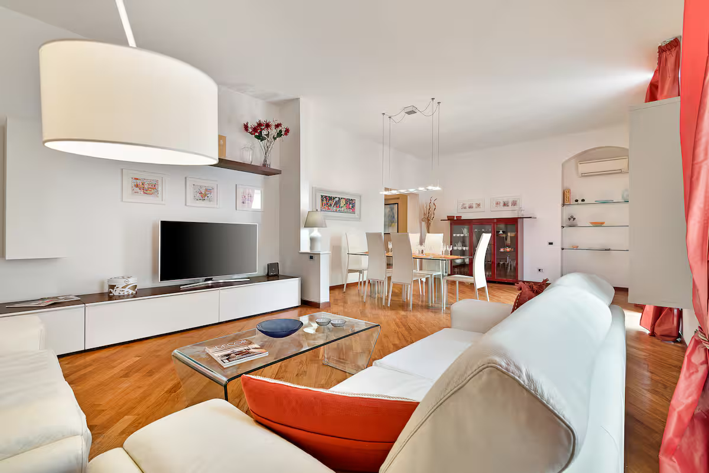
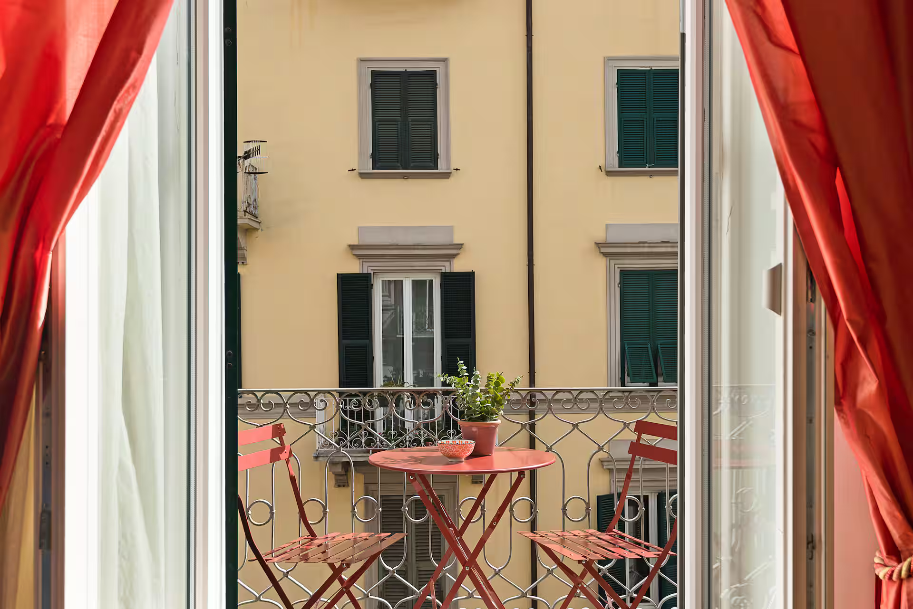
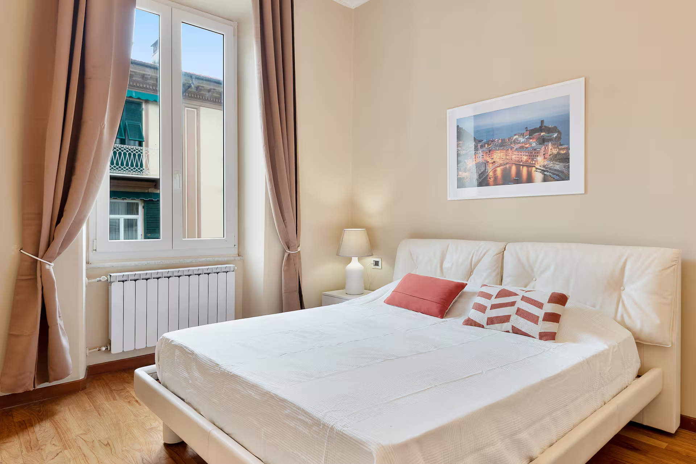
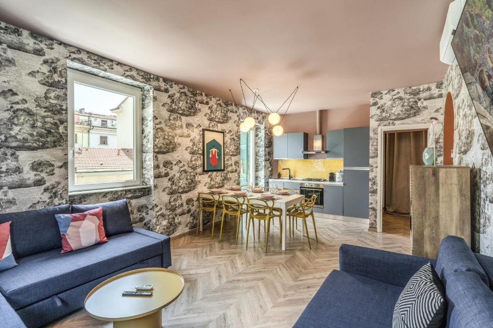
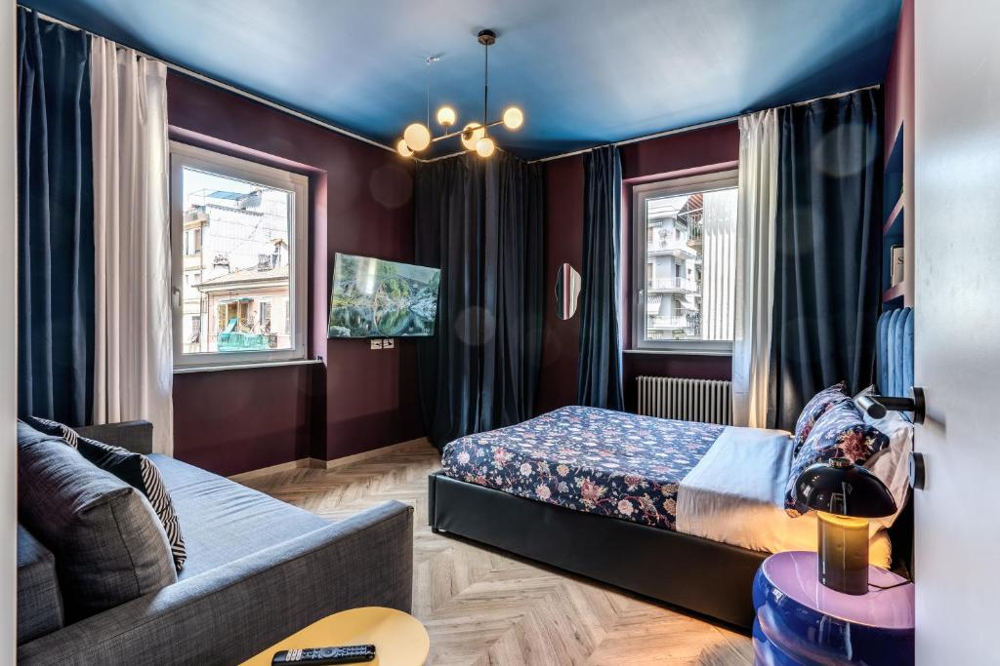
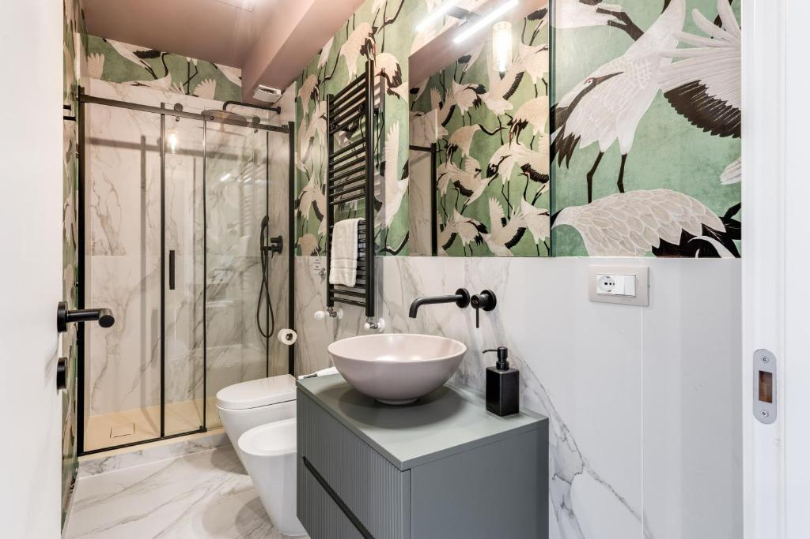

Strung along the Italian Riviera, each village has its own personality. A tiny train connects them all in minutes – hop on, hop off, repeat. We're based in La Spezia, the gateway city just down the line.
The big beach
Postcard harbour
Hilltop vineyards
Colourful icon
Dramatic cliffs
A loose plan – enough structure to not waste time, enough freedom to get lost in an alley and find the best pesto of your life.
Make your way to La Spezia – the gateway city to Cinque Terre. Direct train connections from Florence (2.5h), Milan (3h), or Pisa (1.5h). Drop bags at the apartment and breathe.
🚆 travelNo rushing to the villages tonight – unwind in La Spezia instead. Stroll the waterfront promenade, wander Via del Prione, and find a local trattoria for the first group dinner. La Spezia has a great seafood scene that most tourists skip entirely. Fresh catch, local Vermentino white wine, and way too much focaccia.
🍝 foodGrab a cappuccino in La Spezia, then hop on the Cinque Terre Express to Monterosso – the northernmost village (~25 min). Start the day at the beach or explore the old town streets.
🚆 train · ~25 minThe most iconic trail in the Cinque Terre. About 2 hours through terraced vineyards with jaw-dropping coastal views around every bend. Moderate difficulty – bring water!
🥾 hike · 3.5km · ~2hEarned it. Grab a seat at the harbour – trofie al pesto, fried anchovies, and a cold Birra Moretti. Vernazza's little piazza is the perfect reward after the hike.
🍝 foodChoice time: laze around Vernazza's harbour, swim off the rocks, or take the train (or hike ~1.5h) to Corniglia – the quiet hilltop village with vineyard views and zero crowds.
✨ exploreYou're already here – stay for the magic hour. Grab a harbourside table as the sun drops behind the headland. Fresh seafood, local wine, the sound of waves. Then a relaxed train back to La Spezia (~20 min). Tickets are only €5 after 7:30pm!
🍷 dinnerHead to the closest village – just 9 minutes from La Spezia. Riomaggiore's colourful houses tumble down to the water in dramatic fashion. Wander the narrow main street, grab a focaccia from a bakery.
🚆 train · ~9 minOne stop along by train (or walk the Via dell'Amore if it's open!). Manarola is the most photographed village – get the viewpoint from the cemetery path. It's stunning.
✨ exploreHire a small boat from Riomaggiore or Manarola to see the coastline from the water – the villages look completely different from the sea. Or just find some rocks and jump in 🏊
🏊 swimLast night calls for the best table. Sunset spritz at Nessun Dorma as the sun drops into the Ligurian Sea, then Trattoria dal Billy in Manarola for the seafood feast. Frutti di mare, grilled branzino, local Sciacchetrà dessert wine. Cheers to the crew 🥂 Train back to La Spezia (~15 min) – last service is 11:30pm, plenty of time.
🍷 feastOne last village visit – train to Riomaggiore (9 min) for a final cappuccino, a wander through those dramatic colourful streets before the crowds arrive, and a goodbye look at the coast. Pick up limoncello, pesto jars, or olive oil to take home.
☕ morningTrain back to La Spezia – you're already at the main station, no transfers needed. Grab bags from the apartment and catch your onward train. Easy. Or – plot twist – add another day? 😏
🚆 travelWe're based in La Spezia – the gateway city to Cinque Terre. Better value than staying in the villages, easier arrivals & departures, and the Cinque Terre Express gets you to Riomaggiore in 9 minutes. More space, more restaurants, more practical for a group of 6.



3 bedrooms · 3 beds · 2 bathrooms · hosted by Claudio
Free cancellation before May 21



3 bedrooms · 3 queen beds + sofa beds · downtown La Spezia
Non-refundable
Got a suggestion? Drop it in the group chat!
The things that'll save you time, money, and confusion.
Every 15-20 min, 5am–11:30pm. La Spezia → Riomaggiore 9 min, → Monterosso 25 min. Tickets €5 after 7:30pm. Get the Cinque Terre Treno Card (~€49-68/3 days) for unlimited rides + trail access.
The Blue Trail (SVA) connects all 5 villages. Best section: Monterosso → Vernazza (~2h). Check trail status before going – some sections close seasonally. Included with the Cinque Terre Treno Card.
Bring some cash – smaller village restaurants and shops may not take cards. La Spezia has plenty of ATMs. Budget ~€60-80/person/day for food & drinks.
Good walking shoes are essential (cobblestones + trails). Swimsuit under clothes for spontaneous dips. Layers for evening – it can cool down by the sea.
Late May is ideal – 20-24°C, mostly sunny, not yet peak summer crowds. Sea temp around 18-20°C – refreshing but swimmable!
Trofie al pesto · Fried anchovies · Focaccia di Recco · Sciacchetrà wine · Limoncello · Farinata · Fresh catch of the day. Don't skip La Spezia's own restaurants – the daily market on Via del Prione is 🤌